Anime Scenes
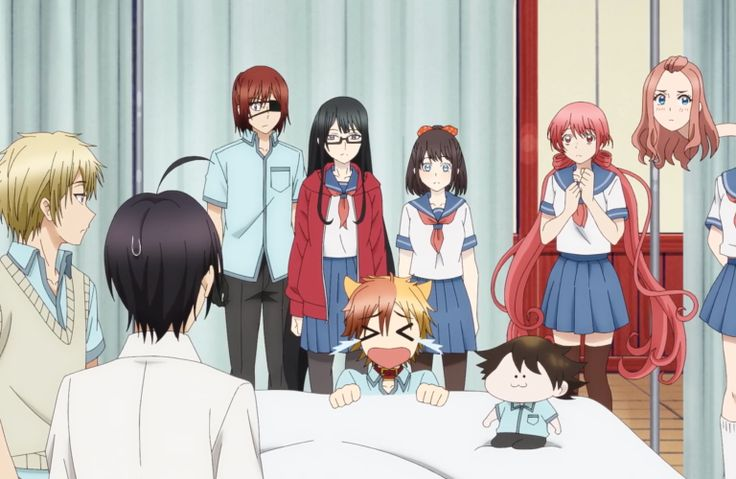
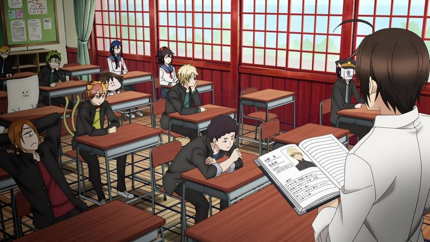
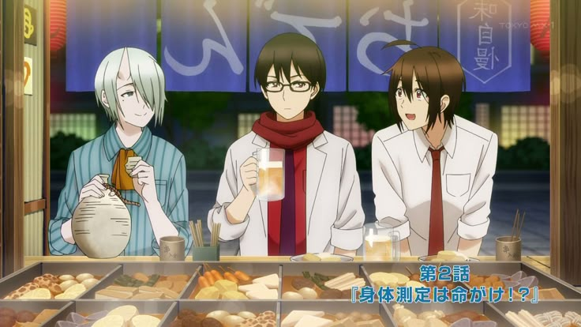
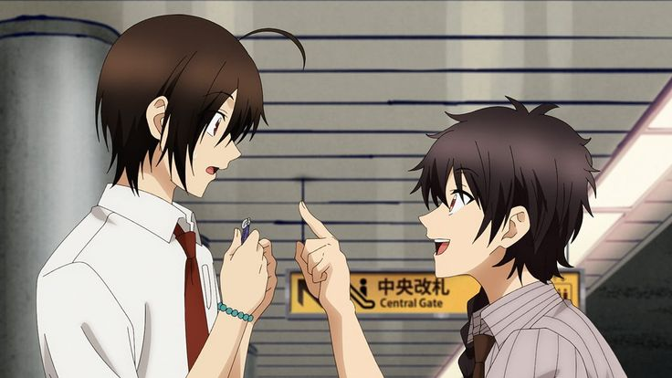
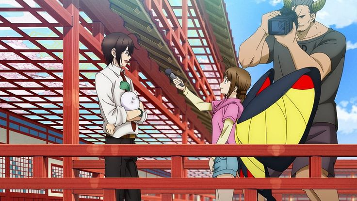
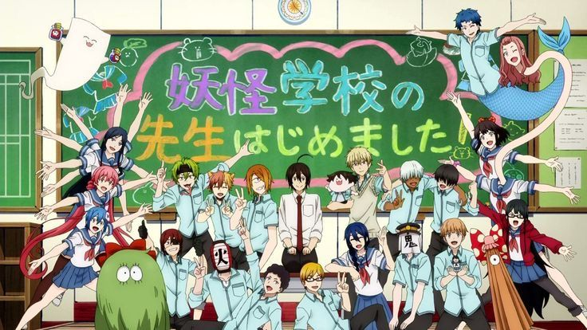
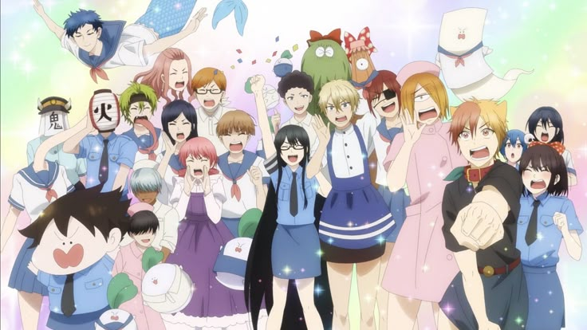
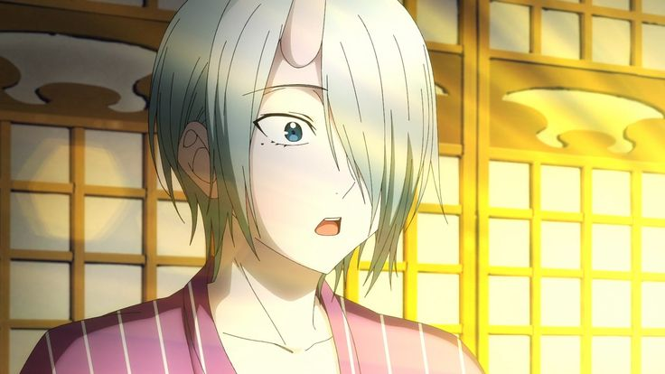
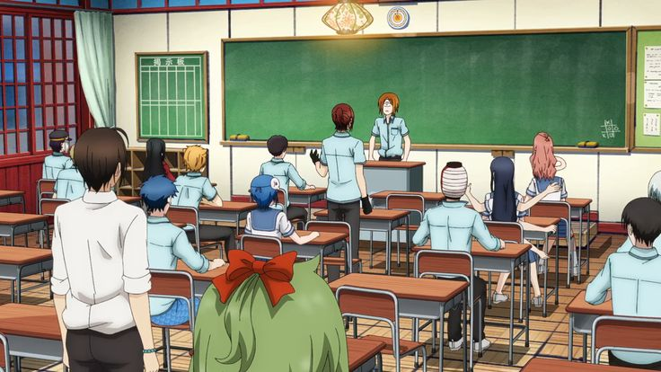
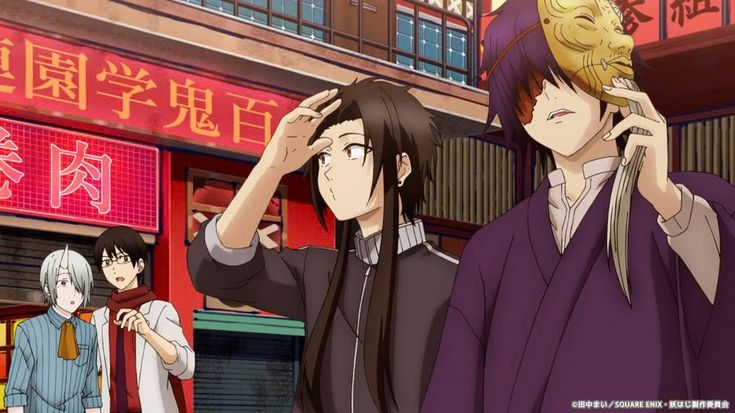
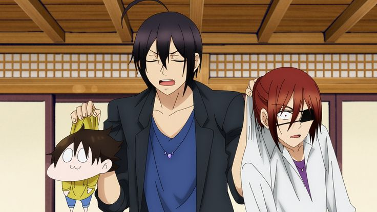
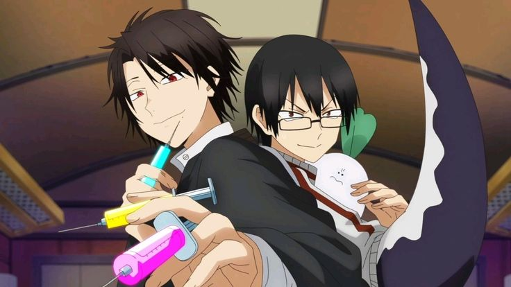
“Teaching is hard enough without your students trying to eat you!”
Anime Studio: Satelight
Director: Katsumi Ono
Producer: Ghoul School Committee
Distributor: Tokyo MX
Rating: ★ 7.0 / 10
Source: Manga
Release Date: October 2024
Duration: 24 min per episode
Music by: Kohta Yamamoto
Genres: Comedy, Supernatural, School
Country: Japan
Language: Japanese
Original Author: Mai Tanaka
Status: Finished